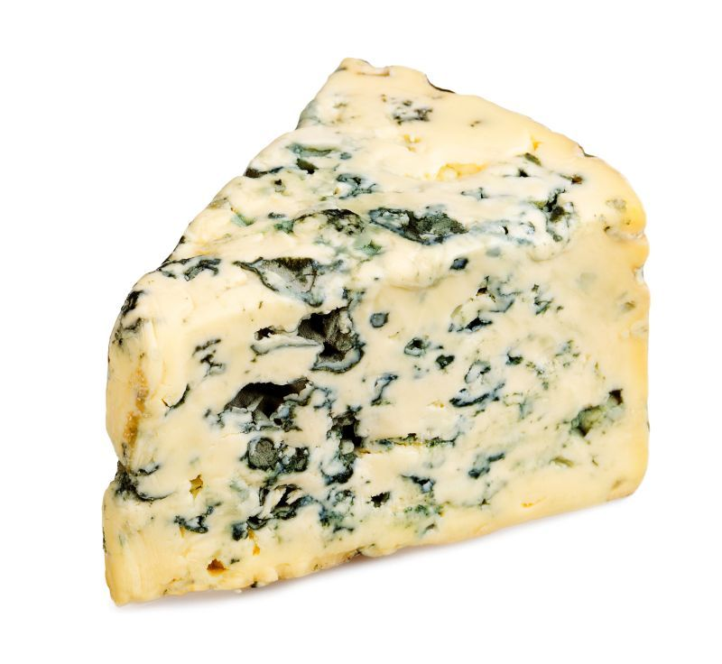
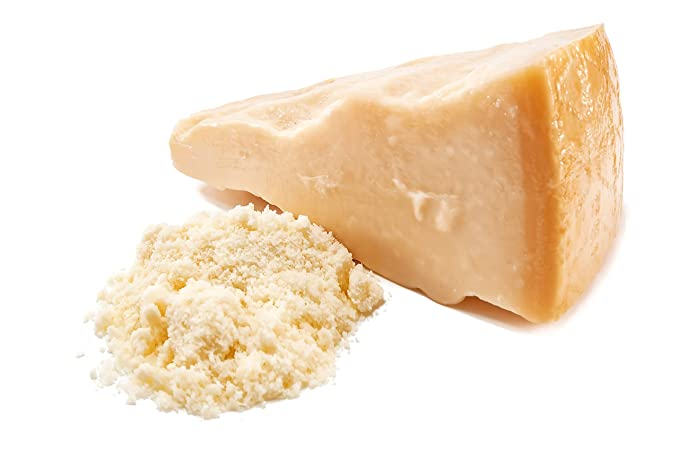

Quesos
Historia del Queso
No podemos decir una fecha exacta del Origen del Queso, pero se cree que existe desde hace más de seis mil años y este origen es una incógnita; se cree que el primer queso fue hecho accidentalmente por un comerciante árabe. Según la leyenda, éste salió de casa montado a caballo para ir a trabajar en un día de mucho calor, llevando consigo una bolsa llena de leche de cabra para beber.
Al final del día, el hombre tomó el cantil y se dio cuenta de inmediato que la leche se había separado en dos partes: un líquido fino, el suero, y una porción sólida. Esta transformación se derivó no solo por el galope del caballo y el calor del sol, sino también por una sustancia que habría quedado en las paredes internas del cantil, llamada cuajo.
Tipos de Quesos
Queso Duro
El queso duro debe su nombre a la forma de preparación con la que se realiza. Para elaborar un queso duro, se le somete a una presión más fuerte para que se pueda formar de una forma más compacta. A pesar de esta presión a la hora de elaborarse, podemos encontrarnos con diferentes tipos de queso duro de acuerdo con la leche que se ha empleado o a la técnica en concreto con la que se ha realizado.

Queso Azul
El queso azul es una clasificación general de los quesos de leche de vaca, de oveja y de cabra que tienen en su pasta cultivos de Penicillium añadidos al producto final y que proporcionan un color entre el azul y el gris-verdoso característico debido a los mohos.
Queso de Mano
El queso de mano es un tipo de queso fresco originario y producido en Venezuela. Es de forma plana y redonda, de pasta hilada y de textura suave y elástica, obtenido del proceso de coagulación enzimática de la leche de vaca cruda entera o descremada.
Queso Amarillo
El queso amarillo es elaborado a partir de una mezcla de quesos cheddar a la usanza americana, razón por la cual es de color amarillo. Posee un sabor suave a queso maduro, ligeramente lácteo y salado. Definitivamente su sabor lo hace insustituible. Su textura es firme, tersa, moderadamente cremosa. Funde fácil y uniformemente.
Queso Mozarella
La mozzarella es un queso del sur de Italia elaborado tradicionalmente con leche de búfala italiana mediante el método de la pasta hilada. La mozzarella fresca es generalmente blanca pero cuando se sazona se torna de color amarillo claro dependiendo de la dieta del animal.

Queso Parmesano
El parmesano es un queso granular duro italiano producido con leche de vaca y envejecido al menos 12 meses. Lleva el nombre de dos de las áreas que lo producen, las provincias de Parma y Reggio Emilia.